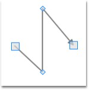
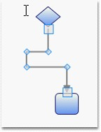

Line connector can be used to draw polylines using IntermediatePoints property. Polylines are drawn using intermediate points for straight lines and orthogonal line connectors. For orthogonal lines, intermediate points are updated so that the adjacent line segments are always perpendicular to each other. These intermediate points are visually represented as vertex.
Properties, Methods and Events tables
|
Property |
Description |
Type |
Value it accepts |
Reference links |
|
IntermediatePoints |
Gets or sets the intermediate points. |
Dependency property |
List<Point> |
No |
Polylines
Straight line connectors can be used as poly line by using IntermediatePoints property. This can be achieved at run time by holding Ctrl + Shift and Click on the line, or by simply changing the IntermediatePoints collection. This will reflect in the line connector.

Figure 56: Polyline
Poly Orthogonal Lines
Orthogonal lines can have more than two intermediate points. All these Intermediate points are can be dragged. Unlike straight lines, orthogonal lines maintain their perpendicularity even after the intermediate points are dragged.

Figure 57: Poly Orthogonal Lines
 Intermediate Points
Intermediate Points